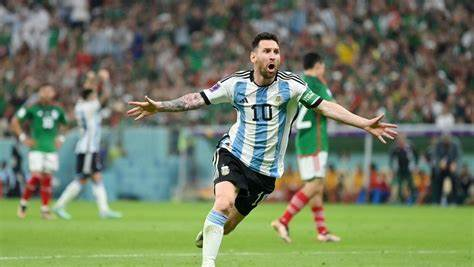
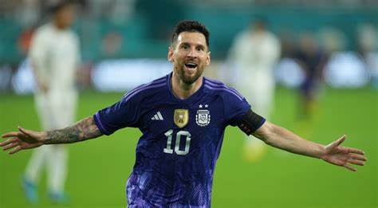

Biografía
Lionel Andrés Messi, nacido el 24 de junio de 1987 en Rosario, Argentina, es considerado uno de los mejores futbolistas de todos los tiempos. Desde muy joven mostró un talento excepcional para el fútbol, uniéndose a las divisiones juveniles del Newell's Old Boys. A los 13 años, se trasladó a España para unirse a la academia del FC Barcelona, La Masia, donde recibió tratamiento para una deficiencia de hormona del crecimiento.
 Lionel Messi actualmente juega para el *Inter Miami CF, un club de fútbol que compite en la Major League Soccer (MLS) de Estados Unidos. Inter Miami fue fundado en 2018 y comenzó a jugar en 2020. El equipo tiene su sede en Miami, Florida, y sus partidos se llevan a cabo en el **DRV PNK Stadium*, ubicado en Fort Lauderdale, que es parte del área metropolitana de Miami.
Estadísticas de Carrera
| Temporada | Club | Partidos | Goles | Asistencias |
|---|---|---|---|---|
| 2004-2021 | FC Barcelona | 778 | 672 | 268 |
| 2021-2023 | psg | 75 | 32 | 34 |
| 20204-2025-Presente | Inter Miami | 28 | 21 | 20 |
Títulos y Logros
- - La Liga: 10 títulos - Copa del Rey: 7 títulos - Supercopa de España: 8 títulos - Liga de Campeones de la UEFA: 4 títulos - Supercopa de la UEFA: 3 títulos - Copa Mundial de Clubes: 3 título
- - Copa América: 1 título - Finalissima: 1 título - Copa Mundial de la FIFA: 1 título
- - Ligue 1: 1 título - Trophée des Champions: 1 título
- Leagues Cup: 1 título